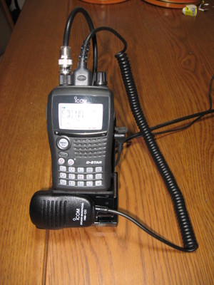
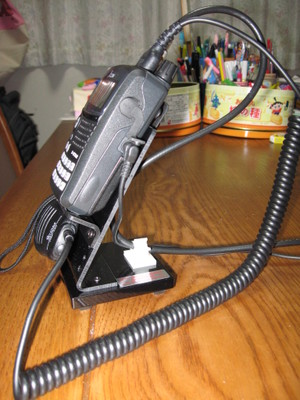

Nifty! Accessoriesに注文していた商品が届きました。USPS First Class Internationalで，注文から丁度一週間です。
Nifty E-Z Guide to D-STAR Operation
この本は，D-Starに関する最初の書籍だと思われます。以下のような章立てで，全104ページあります。
Chapter 1: D-STAR
Chapter 2: Dplus Gateway Operation
Chapter 3: Gateway User Registration
Chapter 4: Setting Up Callsign Memories
Chapter 5: DV Short Text Messaging
Chapter 6: Internet Resources
Chapter 7: Radio Programming Software
Chapter 8: DV Mode Slow-speed Data
Chapter 9: DV Dongle, D-STAR Adapter
E-Z Guideというだけあって運用の基本が記述されている初心者向けの本です。「どう使うか」がメインで，「どうなっている」という内容はありません。また全体の半分くらいの内容はG2/Dplus環境を前提とした話なので，ある程度慣れた国内局にはあまり役に立たちそうにもありません。しかし，D-Star関連情報があちこちのWebにバラバラに存在している現状を考えると，それらが本の形でまとめられたことには意味があると思います。
改めて，海外ではD-Starが幅広い使われ方をしているのだと言うことが読んでわかります。
ちなみに運用上忘れがちな注意点として，ゲートウェイ経由の交信が終了したらURをCQCQCQに戻すことという記述があります。ここで著者自身の体験例として，日本のある局との交信終了後ローカルから呼ばれたのでそのまま話を続けていたら，その会話が全て日本にブロードキャストされていたという失敗談が書かれています。この時の日本局が実ハンドルと実コールサイン入りで書かれていますよ!。私もよくお話しさせていただくアクティブ局です。海外の本に引用されるなんてすてきですね!!!
HT Radio Desk Stand  
手持ちのID-80をセットアップしたところです。
まぁあえて輸入までして買う必要はないでしょう。十分自作できます。
{kind=link}
{kind=link}
下の基台部分は金属で重さがありID-80＋ケーブルの重さでもしっかり安定しています。
一方，無線機を支える斜めの板はアクリル製でフニャフニャします。置いたまま一本指だけでボタン操作はできますが，もう少ししっかりすると良いかなと思います。